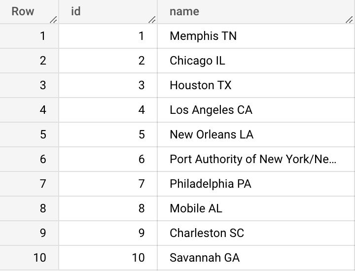
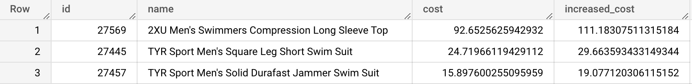
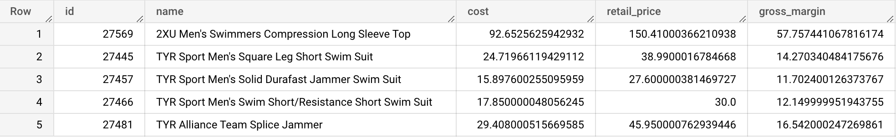
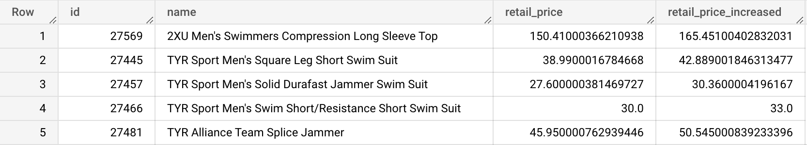
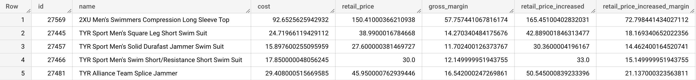

/*
This is a multiple-line comment
for longer notes
*/
SELECT * -- This is a single-line comment
FROM bigquery-public-data.thelook_ecommerce.users;
SELECT id, name
FROM bigquery-public-data.thelook_ecommerce.distribution_centers;

SELECT first_name, last_name, id, id AS user_id
FROM bigquery-public-data.thelook_ecommerce.users;
SELECT id,
name, cost, cost * 1.2 AS increased_cost
FROM bigquery-public-data.thelook_ecommerce.products;

{% include practice_problems_intructions.html %}bigquery-public-data.thelook_ecommerce.products
Write a query that will display a new column named margin showing the difference between the retail_price and the cost.

SELECT id,
name,
cost,
retail_price,
retail_price - cost AS gross_margin
FROM bigquery-public-data.thelook_ecommerce.products;
bigquery-public-data.thelook_ecommerce.products
Write a query that will display the id, name, retail_price columns, plus a new column called retail_price_increased that shows retail prices increased by 10%.

SELECT id,
name,
retail_price,
retail_price * 1.1 AS retail_price_increased
FROM bigquery-public-data.thelook_ecommerce.products;
bigquery-public-data.thelook_ecommerce.products
Write a query that will display:

SELECT id,
name,
cost,
retail_price,
retail_price - cost AS gross_margin,
retail_price * 1.1 AS retail_price_increased,
(retail_price * 1.1 - cost) AS retail_price_increased_margin
FROM bigquery-public-data.thelook_ecommerce.products;